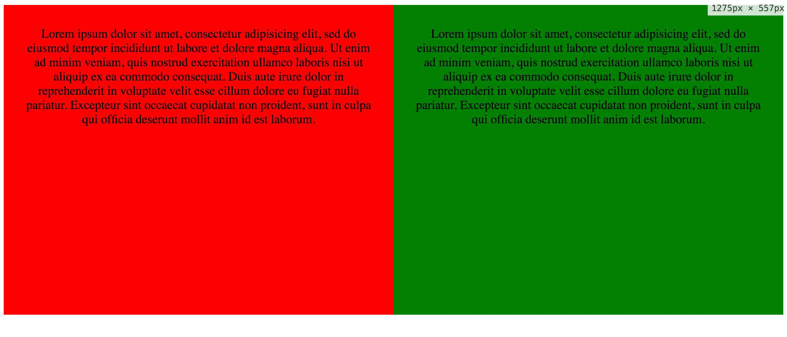
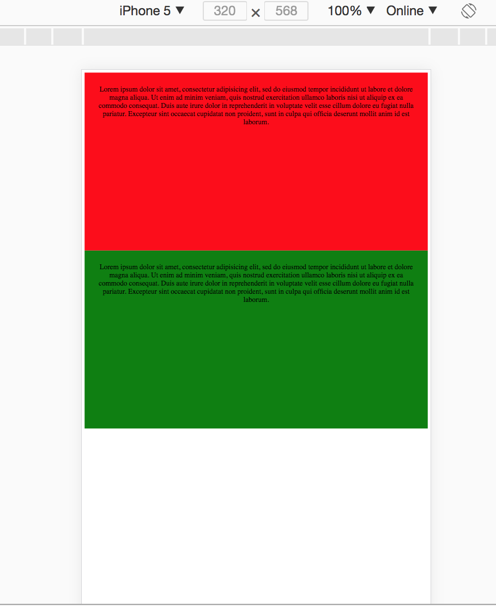
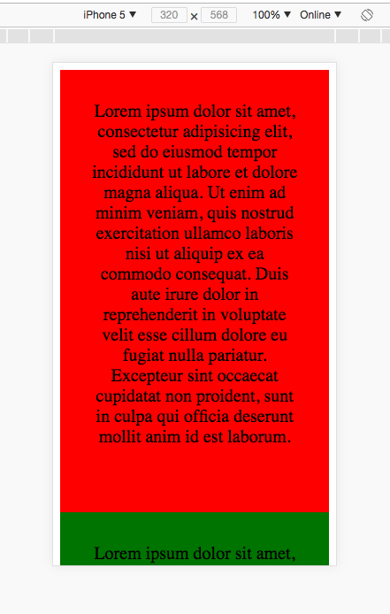

来自：http://www.majiang.life/blog/head-first-responsive-web-design/?hmsr=toutiao.io&utm_medium=toutiao.io&utm_source=toutiao.io
拓展：https://www.cnblogs.com/2050/p/3877280.html
什么是响应式布局
简单的说响应式布局就是一个网站能够兼容多个终端，而不是为每个终端做一个特定的版本。如果页面元素比较少，那么放在一起做响应式布局的话比较容易维护，但是页面元素多的话，不建议采用响应式布局。
如何快速实现web响应式布局
|
|
我们简单解释一下上述代码片段
min-width指的是当屏幕尺寸大于当前值的时候样式生效。
外层的div包裹内层的两个div。
col-md-6 col-sm-12当屏幕尺寸大于768px的时候子div宽度是父div的一半，所以是并排。当屏幕尺寸大于480px的时候子div宽度和父div的宽度一样。下图为不同尺寸下的效果图。


那么问题来了，图一尺寸大于768px不假，但是也大于480px啊，那么怎么就按照768px的尺寸排布了呢？这里就涉及到了CSS 优先级：
CSS 的基本优先级如下
（外部样式）External style sheet <（内部样式）Internal style sheet <（内联样式）Inline style
如果优先级一样便有一个覆盖原则，后面的覆盖前面的，于是如例，当屏幕尺寸慢慢变大到768px的时候，后者遍生效了。
注意观察的同学又发现问题了，图二没有办法看啊，太小了吧。是的，我们的响应式还没有做完，这个时候我们在head里面添加如下一行代码再试试？

width=device-width: 表示此宽度不依赖于原始象素(px)，而依赖于屏幕的宽度.
Meta ViewPort 是什么
手机浏览器是把页面放在一个虚拟的“窗口”(viewport)中，通常这个虚拟的“窗口”(viewport)比屏幕宽，默认是把网页挤到一个很小窗口以便全部预览，这样也不会破坏没有适配手机布局的网页。移动版的 Safari 浏览器最新引进了 viewport 这个 meta tag，让网页开发者来控制 viewport 的大小和缩放，其他手机浏览器也逐步支持。我们如果做了手机屏幕尺寸的适配就可以手动调整viewport，这样就可以把网页内容和手机布局合理的展示给用户。下面是具体参数的说明：
- width: 设置layout viewport 的宽度，为一个正整数，或字符串”width-device”
- initial-scale: 设置页面的初始缩放值，为一个数字，可以带小数
- minimum-scale: 允许用户的最小缩放值，为一个数字，可以带小数
- maximum-scale: 允许用户的最大缩放值，为一个数字，可以带小数
- height: 设置layout viewport 的高度，这个属性对我们并不重要，很少使用
- user-scalable: 是否允许用户进行缩放，值为”no”或”yes”, no 代表不允许，yes代表允许
Media Queries 详解
中文叫做媒体查询，它包含一个媒体类型(media type)和至少一个表达式，用媒体特性限制样式表的作用范围。下面我们直接通过例子对相对的关键字进行分析：
only
用于向早期浏览器隐藏媒体查询，比如IE如果不支持的话直接忽略当前定义的样式。和其他表达式一起用需要 and1@media only screen and (min-width: 400px)screen
screen是一种媒体类型，例中的screen意思是仅支持彩色电脑显示器。其他属性如下：- all：适用于所有设备
- print：paged material and documents viewed on screen in print previe mode.
- screen: 彩色电脑显示器
- speech：intended for speech synthesizers
and
and是一种操作符，表示被链接的表达式不许同时满足，其他表达式如下：- and：所有条件必须满足
- ,：只要满足一种条件即可
- not：条件的取反
min-width
min-width是媒体特征，他的意思是最小宽度满足的时候就为真，其他媒体特征:- width： viewport width
- height： viewport height
- aspect-ratio: viewport的宽高比如：16/9
- orientation: 宽度和高度的大小关系
- resolution: pixel density of the output device
- scan: scanning process of the output device
- grid: is the device a grid or bitmap
- color: number of bits per color component of the output device, or zero if the device isn’t color
- color-index: number of entries in the output device’s color lookup table, or zero if the device does not use such a table